第03讲 角
课程标准 | 学习目标 |
①掌握角的概念及角的表示方法 ②掌握角的有关计算 | 1．掌握角的概念及角的表示方法，钟面角、方位角，并掌握其运算,并能进行角度的互换；掌握运用尺规作已知角，相等角等； 2．会利用角平分线的意义进行有关表示或计算;并掌握角大小比较方法. |
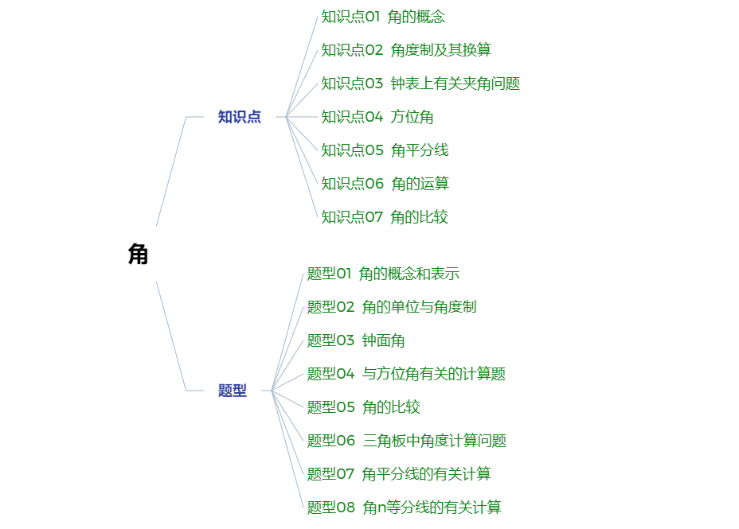
知识点01 角的概念
1.角的定义：
（1）定义一：有公共端点的两条射线组成的图形叫做角，这个公共端点是角的顶点，这两条射线是角的两条边．如图1所示，角的顶点是点O，边是射线OA、OB．
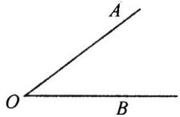
（2）定义二：一条射线绕着它的端点旋转而形成的图形，射线旋转时经过的平面部分是角的内部．如图2所示，射线OA绕它的端点O旋转到OB的位置时，形成的图形叫做角，起始位置OA是角的始边，终止位置OB是角的终边．
注意：（1）两条射线有公共端点，即角的顶点；角的边是射线；角的大小与角的两边的长短无关．
（2）平角与周角：如图1所示射线OA绕点O旋转，当终止位置OB和起始位置OA成一条直线时，所形成的角叫做平角，如图2所示继续旋转，OB和OA重合时，所形成的角叫做周角．
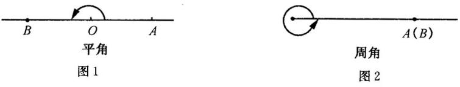
2.角的表示法：角的几何符号用“∠”表示，角的表示法通常有以下四种：

注意：用数字或小写希腊字母表示角时，要在靠近角的顶点处加上弧线，且注上阿拉伯数字或小写希腊字母．
3.角的画法
（1）用三角板可以画出30°、45°、60°、90°等特殊角．
（2）用量角器可以画出任意给定度数的角．
（3）利用尺规作图可以画一个角等于已知角．
【即学即练1】
1．（23-24六年级下·山东烟台·期中）在下列四个图形中，能用 ，
， ，
， 三种方法表示同一个角的图形是（ ）
三种方法表示同一个角的图形是（ ）
A． B． C． D．
【答案】B
【分析】本题主要考查了角的概念．角可以用一个大写字母表示，也可以用三个大写字母表示．角还可以用一个希腊字母表示，或用阿拉伯数字表示．
【详解】解：能用，，三种方法表示同一个角的图形是选项B中的图，
选项A，C，D中的图都不能用，，三种方法表示同一个角的图形，
故选：B．
2．（23-24六年级下·全国·假期作业）如图，用三个大写字母表示所标记的各角．
（1）可以表示为 ；
（2） 可以表示为 ；
可以表示为 ；
（3） 可以表示为 ．
可以表示为 ．
【答案】  （或
（或 ）
）  （或
（或 ） （或
） （或
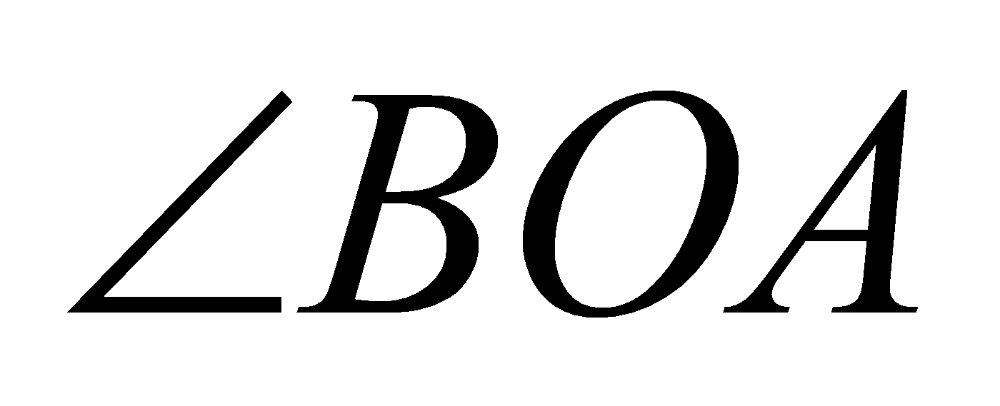
）【分析】本题考查角的表示，根据角的表示方法直接求解即可得到答案，熟记角的表示方法是解决问题的关键．
【详解】解：（1）可以表示为或；
（2）可以表示为或；
（3）可以表示为或；
故答案为：（1）（或）；（2）（或）；（3）（或）．
知识点02 角度制及其换算
角的度量单位是度、分、秒，把一个周角平均分成360等份，每一份就是1°的角，1°的 为1分，记作“1′”，1′的为1秒，记作“1″”．这种以度、分、秒为单位的角的度量制，叫做角度制．
为1分，记作“1′”，1′的为1秒，记作“1″”．这种以度、分、秒为单位的角的度量制，叫做角度制．
1周角＝360°，1平角＝180°，1°＝60′，1′＝60″．
注意：在进行有关度分秒的计算时，要按级进行，即分别按度、分、秒计算，不够减，不够除的要借位，从高一位借的单位要化为低位的单位后再进行运算，在相乘或相加时，当低位得数大于60时要向高一位进位．
【即学即练2】
1．（23-24七年级下·山东淄博·阶段练习）
 ′ ″；
′ ″；
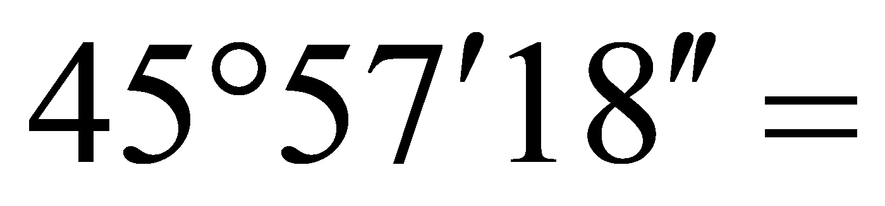
【答案】 1 9 36 
【分析】本题考查了度、分、秒之间的换算．度、分、秒之间是60进制，将高级单位化为低级单位时，乘以60，反之，将低级单位转化为高级单位时除以60．
【详解】解：①∵ ，
，
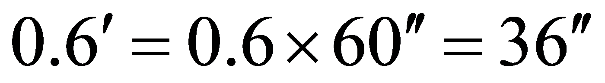
，∴
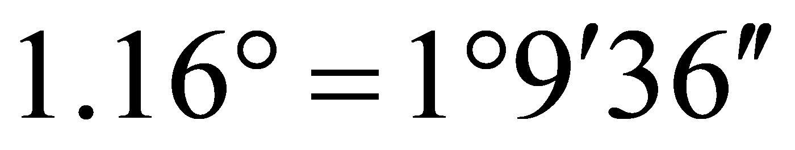
；②∵ ，
，
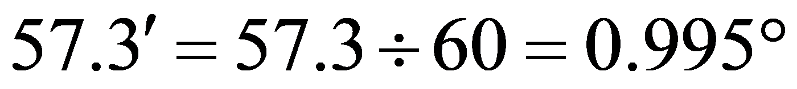
，∴
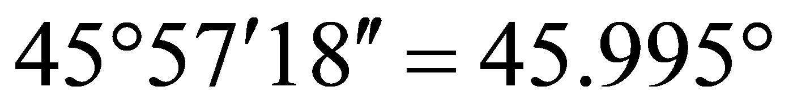
；故答案为：1，9，36；．
知识点03 钟表上有关夹角问题
钟表中共有12个大格，把周角12等分、每个大格对应30°的角，分针1分钟转6°，时针每小时转30°，时针1分钟转0.5°，利用这些关系，可帮助我们解决钟表中角度的计算问题．
【即学即练3】
1．（23-24六年级下·全国·假期作业）小明每天下午 放学，此时钟面上时针和分针的夹角是 ．
放学，此时钟面上时针和分针的夹角是 ．
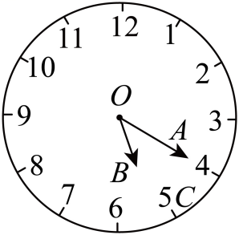
【答案】 /40度
/40度
【分析】根据每2个数字之间相隔30度和时针1分钟走0.5度可得夹角度数．考查钟面角的计算；用到的知识点为：钟面上每2个数字之间相隔30度；时针1分钟走0.5度．
【详解】解：时针20分所走的度数为
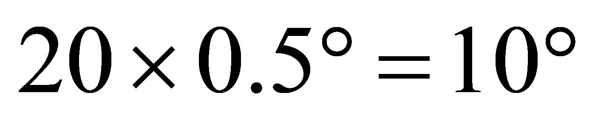
， 时，分针指着4，4与5之间的夹角为
时，分针指着4，4与5之间的夹角为 ，
，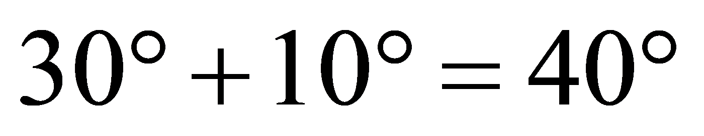
答：此时钟面上时针和分针的夹角是 ．
．
故答案为：．
知识点04 方位角
在航行和测绘等工作中，经常要用到表示方向的角．例如，图中射线OA的方向是北偏东60°；射线OB的方向是南偏西30°．这里的“北偏东60°”和“南偏西30°”表示方向的角，就叫做方位角．

注意：（1）正东，正西，正南，正北4个方向不需要用角度来表示．
（2）方位角必须以正北和正南方向作为“基准”，“北偏东60°”一般不说成“东偏北30°” ．
（3）在同一问题中观察点可能不止一个，在不同的观测点都要画出表示方向的“十字线”，确定其观察点的正东、正西、正南、正北的方向．
（4）图中的点O是观测点，所有方向线(射线)都必须以O为端点．
【即学即练4】
1．（23-24六年级下·黑龙江绥化·开学考试）如图是依依家到学校的行走路线图．
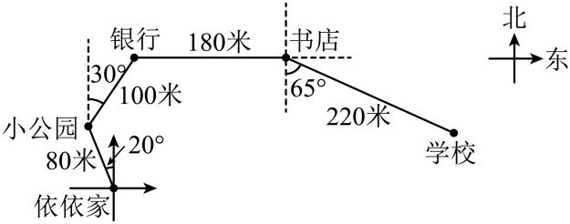
(1)小公园在依依家的 偏 米处．
(2)小公园在银行的 偏 米处．
(3)学校西偏南 ，距离
，距离 处是超市，请用★标出超市的位置．（
处是超市，请用★标出超市的位置．（ 表示
表示 ）
）
【答案】(1)北；西20；距离80．
(2)南；西30；距离100
(3)见解析
【分析】本题主要考查了方位角的表示，解题的关键是熟练掌握方位角的定义．
（1）根据方位角的定义进行解答即可；
（2）根据方位角的定义进行解答即可；
（3）根据学校西偏南，距离处是超市，进行解答即可．
【详解】（1）解：小公园在依依家的北偏西距离80米处．
故答案为：北；西20；80．
（2）解：∵银行在小公园的北偏东距离100米处；
∴小公园在银行的南偏西距离100米处．
故答案为：南；西30；距离100．
（3）解：如图所示：

知识点05 角平分线
从一个角的顶点出发，把这个角分成相等的两个角的射线，叫做这个角的平分线．如图所示，OC是∠AOB的角平分线，∠AOB＝2∠AOC＝2∠BOC，∠AOC＝∠BOC =
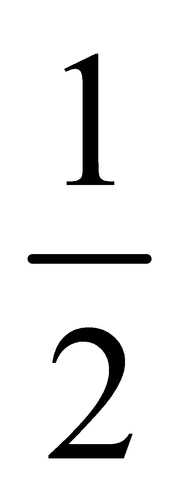
∠AOB．
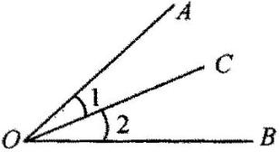
注意：由角平分线的概念产生的合情推理其思维框架与线段中点的思维框架一样．
【即学即练5】
1．（23-24七年级上·江西赣州·期末）如图，已知
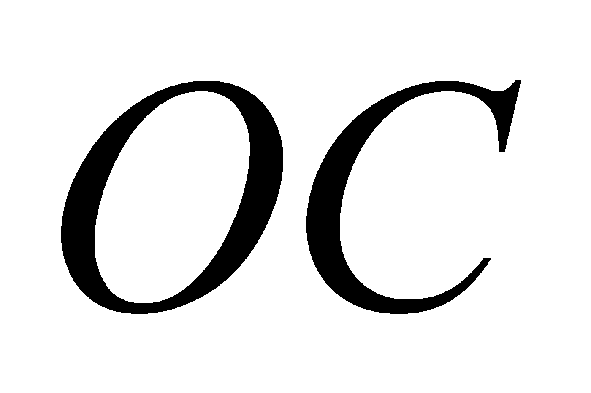
是内部任意的一条射线， 、
、 分别是
分别是 ，的平分线．
，的平分线．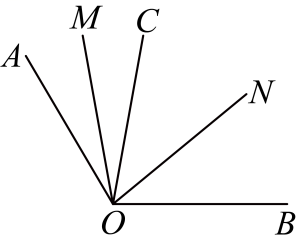
(1)若 ，求
，求 的度数；
的度数；
(2)若
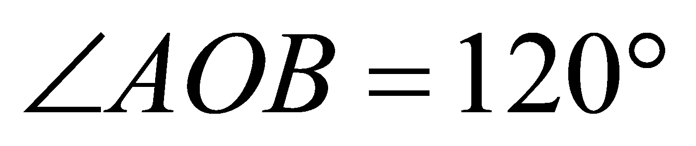
，则 ；若
；若 ，则 ．
，则 ．【答案】(1)
(2) ，
，
【分析】本题主要考查角平分线的定义，角的和差计算，熟练掌握角平分线的定义是解题的关键．
（1）根据角平分线的定义可知
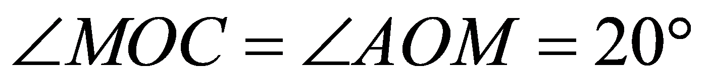
， ，再根据
，再根据 计算，即得答案；
计算，即得答案；（2）根据角平分线定义可知 ，
， ，，再根据计算，即得答案．
，，再根据计算，即得答案．
【详解】（1）解： 、分别是，的平分线，
、分别是，的平分线，
 ，，
，，
 ；
；
（2）解：、分别是，的平分线，
 ，，
，，
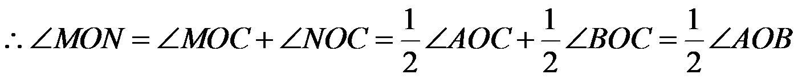
， ，
，
 ．
．
同理：
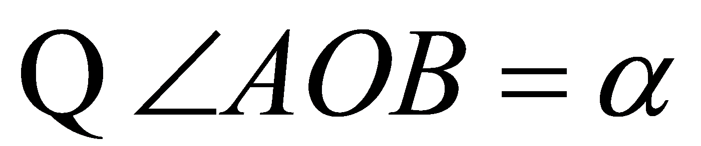
， ．
．
知识点06 角的运算
如图所示，∠AOB是∠1与∠2的和，记作：∠AOB＝∠1+∠2；∠1是∠AOB与∠2的差，记作：∠1＝∠AOB-∠2．
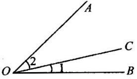
注意：(1)用量角器量角和画角的一般步骤：①对中(角的顶点与量角器的中心对齐)；②重合(一边与刻度尺上的零度线重合)；③读数(读出另一边所在线的度数)．
(2) 利用三角板除了可以做出30°、45°、60°、90°外，根据角的和、差关系，还可以画出15°，75°，105°，120°，135°，150°，165°的角．
【即学即练6】
1．（23-24六年级下·山东烟台·期中）如图，已知是内部的一条射线，图中有三个角：，和，当其中一个角是另一个角的两倍时，称射线为的“巧分线”．如果 ，
， 是
是 的“巧分线”，则
的“巧分线”，则 的度数为 ．
的度数为 ．

【答案】 或
或 或
或
【分析】本题考查了角的定义和巧分线定义，正确理解“巧分线”的定义是解题的关键．
分3种情况，根据巧分线定义即可求解．
【详解】解：∵，是的“巧分线”，
则由“巧分线”的定义可知有三种情况符合题意：
①
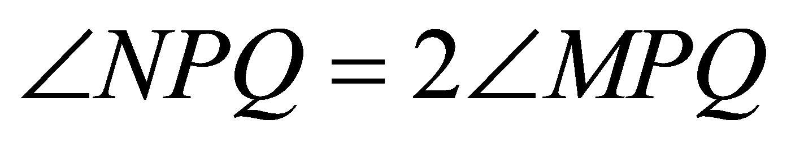
，此时 ；
；② ，此时
，此时 ；
；
③ ，此时
，此时
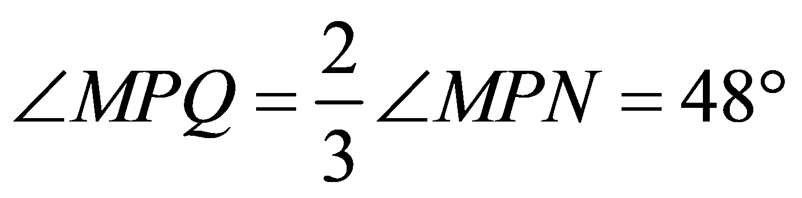
；∴的度数为或或．
故答案为：或或．
知识点07 角的比较
角的大小比较与线段的大小比较相类似，方法有两种：
方法1：度量比较法．先用量角器量出角的度数，然后比较它们的大小．
方法2：叠合比较法．把其中的一个角移到另一个角上作比较．
如比较∠AOB和∠A′O′B′的大小： 如下图，由图（1）可得∠AOB＜∠A′O′B′；由图(2)可得∠AOB＝∠A′O′B′；由图(3)可得∠AOB＞∠A′O′B′．

【即学即练7】
1．（23-24七年级下·山东菏泽·期中）用叠合的方法比较和 两个角的大小，先将的顶点
两个角的大小，先将的顶点 与的顶点O重合，边
与的顶点O重合，边
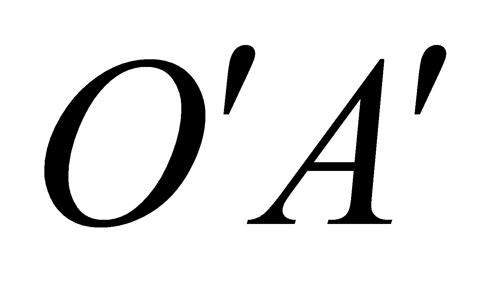
与边 重合，边
重合，边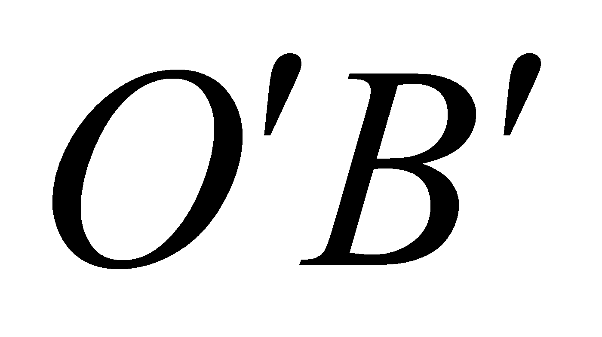
落在了的内部，则和的关系是（ ）A．
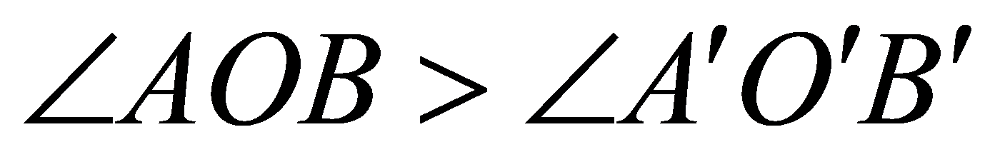
B．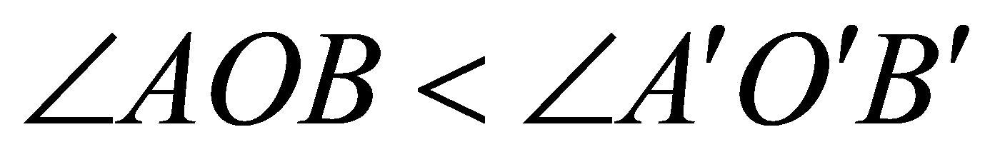
C． D．不确定
D．不确定
【答案】A
【分析】本题考查了角的比较，根据角的大小比较即可得到结论．
【详解】解：如图，
∴，
故选：A
题型01 角的概念和表示
【典例1】（24-25七年级上·全国·单元测试）下列说法错误的是（ ）
A．由两条具有公共端点的射线组成的图形就是角
B．角是由始边绕着端点旋转形成的图形
C．角是由两条直线相交形成的图形
D．角的两边是射线
【答案】C
【知识点】角的概念理解
【分析】本题考查了角的定义，由两条具有公共端点的射线组成的图形叫做角，也可以看作由一条射线绕其端点旋转而成的图形，根据定义逐一判断，即可解题．
【详解】解：A、由两条具有公共端点的射线组成的图形就是角，正确，不符合题意；
B、角是由始边绕着端点旋转形成的图形，正确，不符合题意；
C、角是由两条直线相交形成的图形，说法错误，两条相交直线可以形成四个角，符合题意；
D、角的两边是射线，正确，不符合题意；
故选：C．
【变式1】（23-24七年级上·贵州六盘水·期末）下列四个图形中，能用 ，
， ，
， 三种方法表示同一个角的是（ ）
三种方法表示同一个角的是（ ）
A．
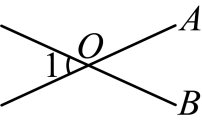
B．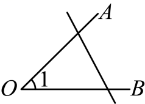
C．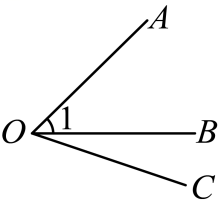
D．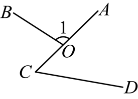
【答案】B
【知识点】角的表示方法
【分析】本题考查了角的表示方法的应用，根据角的表示方法和图形逐个判断即可，解题的关键正确理解角可以用一个大写字母表示，也可以用三个大写字母表示，其中顶点字母要写在中间，唯有在顶点处只有一个角的情况，才可用顶点处的一个字母来记这个角，否则分不清这个字母究竟表示哪个角．
【详解】解： 、因为顶点
、因为顶点 处有四个角，所以这个角不能用，，表示，故本选项错误；
处有四个角，所以这个角不能用，，表示，故本选项错误；
 、因为顶点处只有一个角，所以这个角能用，，表示，故本选项正确；
、因为顶点处只有一个角，所以这个角能用，，表示，故本选项正确；
 、因为顶点处有三个角，所以这个角不能用，，表示，故本选项错误；
、因为顶点处有三个角，所以这个角不能用，，表示，故本选项错误；
 、因为顶点处有两个角，所以这个角不能用，，表示，故本选项错误；
、因为顶点处有两个角，所以这个角不能用，，表示，故本选项错误；
故选：．
【变式2】（23-24七年级下·山东淄博·期末）下列图中的也可以用表示的是（ ）
A．
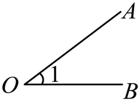
B．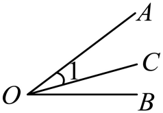
C．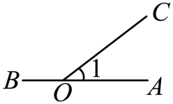
D．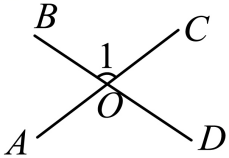
【答案】A
【知识点】角的表示方法
【分析】本题考查了角的表示方法；
角可以用一个大写字母表示，也可以用三个大写字母表示．其中顶点字母要写在中间，唯有在顶点处只有一个角的情况，才可用顶点处的一个字母来记这个角，否则分不清这个字母究竟表示哪个角．角还可以用一个希腊字母（如 ，
， ，
， 、…）表示，或用阿拉伯数字（，
、…）表示，或用阿拉伯数字（， …）表示，据此进行分析即可．
…）表示，据此进行分析即可．
【详解】解：A.可以用表示，符合题意；
B.可以用 表示，但不能用表示，不符合题意；
表示，但不能用表示，不符合题意；
C.可以用表示，但不能用表示，不符合题意；
D.可以用 表示，但不能用表示，不符合题意；
表示，但不能用表示，不符合题意；
故选：A．
【变式3】（23-24七年级下·山东聊城·期中）如图所示，能用，，三种方法表示同一个角的图形是（ ）
A． B．
B．
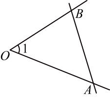
C． D．
D．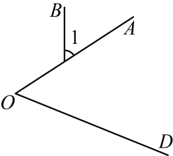
【答案】B
【知识点】角的表示方法
【分析】本题考查了角的概念．解题的关键是掌握角的表示方法的运用．根据角的表示方法和图形逐个判断即可．
【详解】解：A、不能用，，三种方法表示同一个角，故A选项错误；
B、能用，，三种方法表示同一个角，故B选项正确；
C、不能用，，三种方法表示同一个角，故C选项错误；
D、不能用，，三种方法表示同一个角，故D选项错误；
故选：B．
题型02 角的单位与角度制
【典例2】（23-24六年级下·山东济南·开学考试）用度、分、秒表示
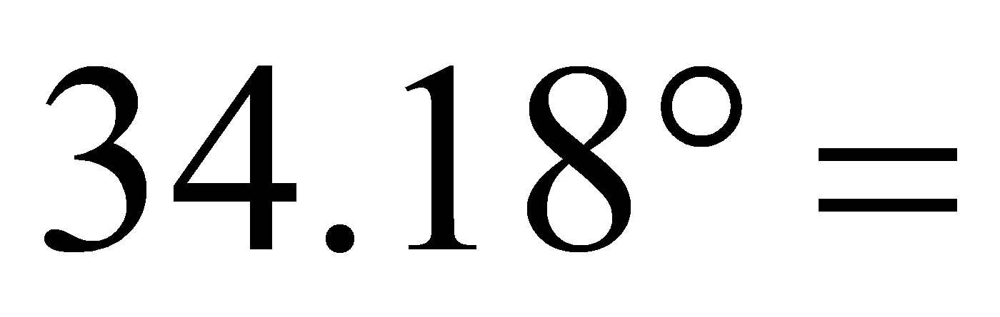
 ′ ″
′ ″【答案】 34 10 48
【知识点】角的单位与角度制
【分析】本题考查了度、分、秒的转化运算．进行度、分、秒的转化运算，注意以 为进制．
为进制．
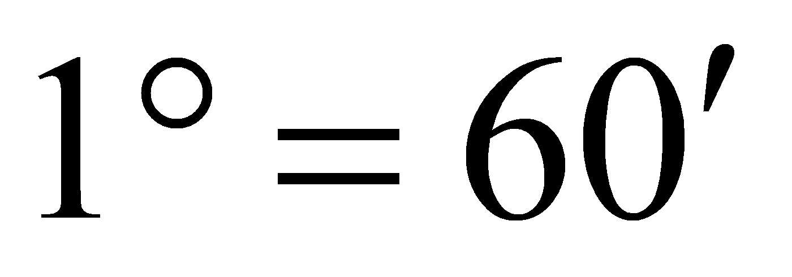
，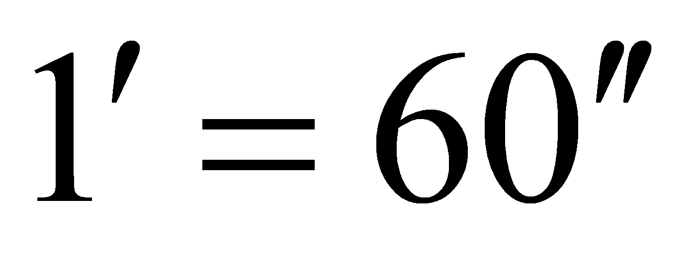
．【详解】解：
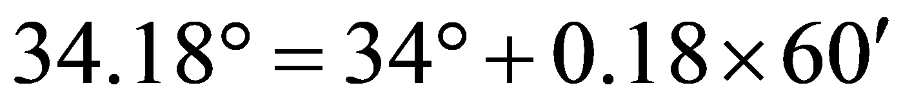
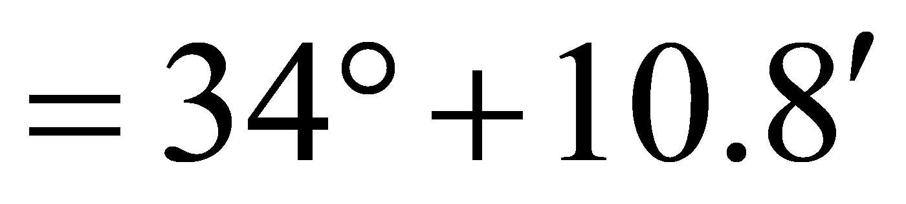
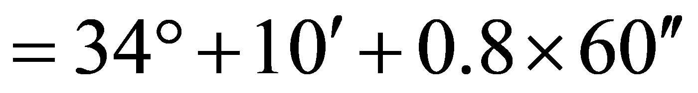
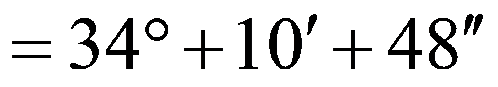
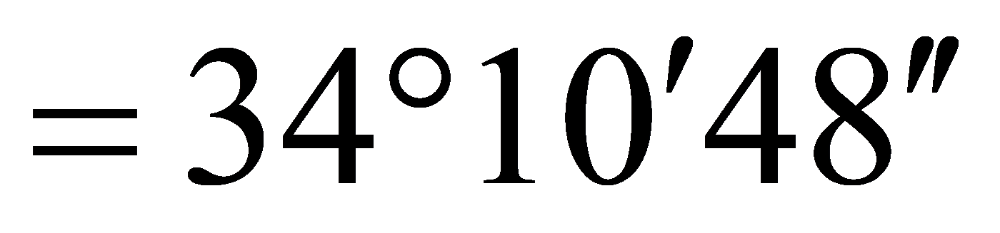
．故答案为：34；10；48．
【变式1】（23-24七年级上·天津河西·期末） ．
．
【答案】
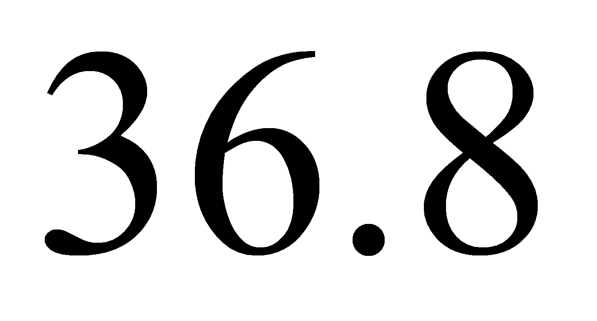
【知识点】角的单位与角度制
【分析】角的单位换算计算即可．
本题考查了角的单位换算，熟练掌握换算进制是阶梯的关键．
【详解】解：
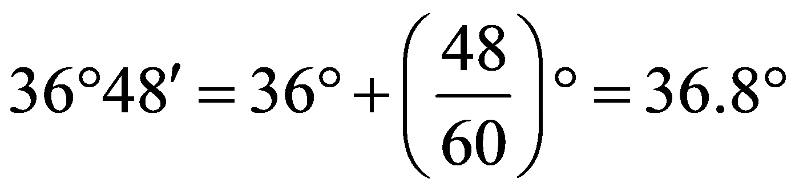
，故答案为：．
【变式2】（23-24七年级下·山东淄博·期中） 度 分 秒．
度 分 秒．
【答案】 

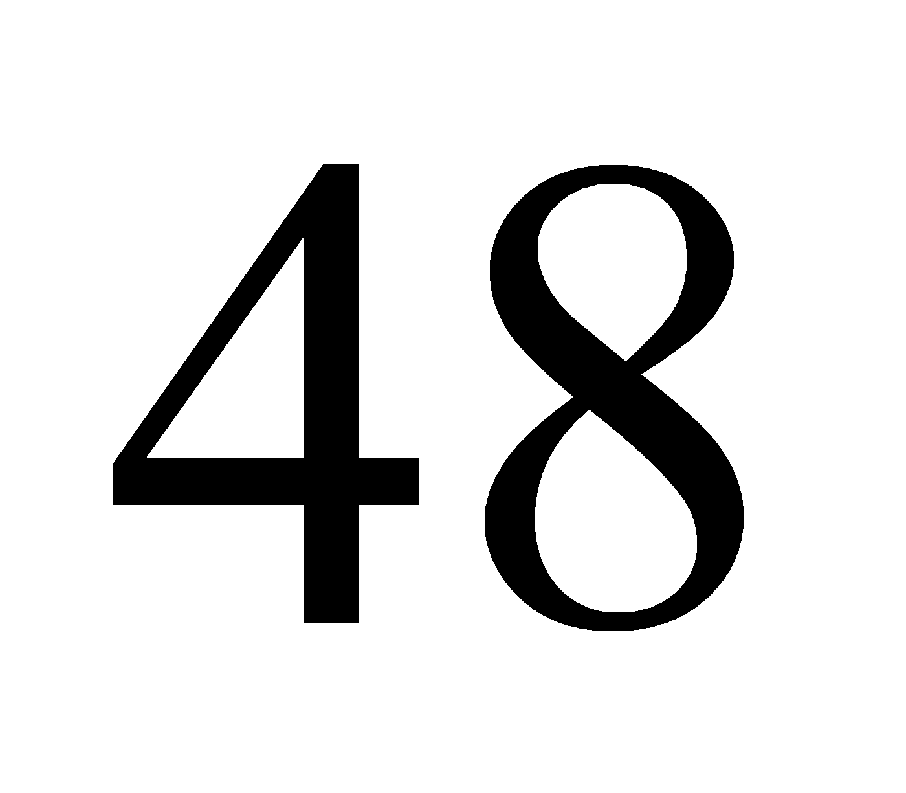
【知识点】角的单位与角度制
【分析】本题考查了度分秒的换算，掌握度分秒的进制关系是解决本题的关键．先把
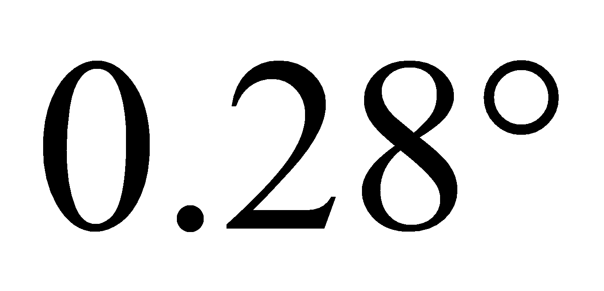
化为分，再把小数分化为秒即可．【详解】解：，
，
．
故答案为：，，．
【变式3】（23-24七年级上·江西吉安·期末）
 ； °
； °
【答案】 12 18
【知识点】角的单位与角度制
【分析】此题主要考查度、分、秒的转化运算，进行度、分、秒的转化运算，注意以60为进制．
根据大单位化小单位乘以进率，小单位化大单位除以进率可得答案．
【详解】解：，．
故答案为：12，18，．
题型03 钟面角
【典例3】（24-25七年级上·全国·单元测试）自习课上，一名同学抬头看见挂在黑板上方的时钟显示为 ，此时时针与分针的夹角是 ．
，此时时针与分针的夹角是 ．
【答案】 /75度
/75度
【知识点】钟面角
【分析】本题考查钟面角，理解钟面角为把圆分成12等分是解题的关键，根据题意当时钟显示为，时针与分针的夹角由两部分组成，分别是之间的两格和之间的半格，求出它们的度数即可得到答案．
【详解】解：如图，
∴时针与分针的夹角为.
【变式1】（23-24七年级上·湖南永州·期末）若此时时钟表上的时间是 分，则时针与分针的夹角为 度．
分，则时针与分针的夹角为 度．
【答案】90
【知识点】钟面角
【分析】本题主要考查了钟面角的计算，先求出时钟上相邻数字之间的度数，再根据时，时针指向数字3，分钟指向数字12进行求解即可．
【详解】解：，
∴此时时针与分针的夹角为90度，
故答案为：90．
【变式2】（23-24七年级下·山东日照·开学考试）2点 分钟时，钟表的时针与分针形成的夹角的度数是 ．
分钟时，钟表的时针与分针形成的夹角的度数是 ．
【答案】 /
/ 度
度
【知识点】钟面角
【分析】本题考考查了钟面角度的计算和时针、分针的转动速度．熟练掌握钟面角度的计算和时针、分针的转动速度是解题的关键．钟面被平均分成了个大格，每个大格的角度是；时针每分钟转，分针每分钟转．
先求出2点时，时针与分针的初始夹角，再根据时针和分针的转动速度，计算分钟后它们的夹角即可．
【详解】解：2点分钟时，钟表的时针与分针形成的夹角的度数为：．
故答案为：．
【变式3】（23-24六年级下·黑龙江哈尔滨·期末）如图是一个时钟的钟面，此时钟面上的时间是下午1点30分，时钟的分针与时针所成的钝角的度数为 度．
【答案】135
【知识点】钟面角
【分析】本题考查钟面角，整个圆分为12个大格，每个大格30度，下午1点30分时，时针与分针所成的钝角含4.5个大格，由此可解．
【详解】解：下午1点30分时，时针与分针所成的钝角含4.5个大格，每个大格30度，
因此时钟的分针与时针所成的钝角的度数为：（度），
故答案为：135．
题型04 与方位角有关的计算题
【典例4】（23-24七年级上·四川成都·期末）如图，已知轮船 在灯塔
在灯塔 的北偏东方向，轮船
的北偏东方向，轮船 在灯塔的南偏东
在灯塔的南偏东 方向，则
方向，则 的度数为 ．
的度数为 ．
【答案】
【知识点】与方向角有关的计算题
【分析】本题考查了方向角，根据题意即可求解，掌握方向角的定义是解题的关键
【详解】解：如图所示标注字母，
由题意知：， ，
∴，
故答案为：．
【变式1】（23-24七年级下·广西钦州·期中）如图，李华同学从点沿北偏东 的方向行走到点，再从点沿南偏西
的方向行走到点，再从点沿南偏西 方向行走到点
方向行走到点 ，则
，则 的大小为 ．
的大小为 ．
【答案】
【知识点】与方向角有关的计算题
【分析】本题考查了方位角．画图正确表示出方位角，利用角的和与差计算即可求解．
【详解】解：如图，
由题意得，，
．
故答案是：40．
【变式2】（23-24七年级下·北京·期中）如图，一艘船从A点出发先沿北偏东方向航行，到达B点时发现前方有冰山，紧急向左进行了90°的转弯，然后沿着 方向航行，则
方向航行，则 ．
．
【答案】
【知识点】与方向角有关的计算题
【分析】本题考查方向角、平行线的性质，解题的关键是理解题意，灵活运用所学知识的．利用平行线的性质求得即可求解．
【详解】解：如图，
∵，，
∴，
∵，
∴，
故答案为：．
【变式3】（23-24七年级上·山东临沂·期末）如图，射线 的方向是北偏东
的方向是北偏东 ，射线
，射线 的方向是北偏西
的方向是北偏西 ，，射线
，，射线 是的反向延长线．
是的反向延长线．
(1)射线 的方向是________；
的方向是________；
(2)求 的度数；
的度数；
(3)若射线 平分，求
平分，求 的度数．
的度数．
【答案】(1)北偏东
(2)
(3)
【知识点】方向角的表示、与方向角有关的计算题、角平分线的有关计算、邻补角的定义理解
【分析】此题主要考查了方向角的表达，角平分线的定义，邻补角，熟练掌握知识点是解题的关键．
（1）先求出，再求得 的度数，即可确定的方向；
的度数，即可确定的方向；
（2）根据，，得出，进而求出的度数；
（3）根据射线平分，即可求出再利用求出答案即可．
【详解】（1）解：如图，
的方向是北偏西，的方向是北偏东，
，，
，
，
，
，
 的方向是北偏东；
的方向是北偏东；
故答案为：北偏东；
（2）解：如图，
，，
．
又 射线是的反向延长线，
射线是的反向延长线，
．
．
（3）解：如图，
，平分，
．
．
．
题型05 角的比较
【典例5】（23-24七年级上·江苏扬州·期末）如图，用同样大小的三角板此较 和
和 的大小，下列判断正确的是（ ）
的大小，下列判断正确的是（ ）
A． B．
B．
C． D．没有量角器，无法确定
【答案】A
【知识点】角的比较
【分析】本题考查了角的大小比较，根据图中的三角尺为等腰直角三角形得，，利用中间角比较角的大小是解题的关键．
【详解】解：∵图中的三角尺为等腰直角三角形，
∴，，
∴，
故选：A．
【变式1】（23-24七年级上·河北保定·期末）如图，下列各式中不一定正确的是（ ）
A． B．
B．
C． D．
【答案】C
【知识点】几何图形中角度计算问题、角的比较
【分析】此题考查了角的比较大小与和差，根据图形进行判断即可．
【详解】解：∵在 的内部，
的内部，
∴，选项A正确，不符合题意；
∵，
∴选项B正确，不符合题意；
根据题意，无法比较和的大小，选项C不一定正确，符合题意；
∵，
∴选项D正确，不符合题意；
故选：C．
【变式2】（23-24七年级下·山东潍坊·期中）如图，已知是内部的一条射线，下列说法一定正确的是（ ）
A． B．
B．
C．可以用表示 D．与表示同一个角
【答案】D
【知识点】角的比较、角的表示方法
【分析】本题主要考查角的大小比较及角的概念，根据角的大小比较及角的概念进行逐一判断即可．
【详解】解：A．∵是内部的一条射线而不是角平分线，∴，故本选项不符合题意；
B．可能大于，也可能小于，也有可能等于，故本选项不符合题意；
C．不可以用表示，故本选项不符合题意；
D．与表示同一个角，故本选项符合题意．
故选：D．
【变式3】（23-24六年级下·山东淄博·期中）如图，正方形网格中每个小正方形的边长都为1，则与的大小关系为（ ）
A． B． C．
C． D．无法比较
D．无法比较
【答案】A
【知识点】角的比较
【分析】本题考查了角的大小比较，利用平移的方法是解题的关键．将平移，让与两个角的顶点重合，即可解答．
【详解】解：将平移，让与两个角的顶点重合，
如图：
可得： 在的内部，
所以．
故选：A．
题型06 三角板中角度计算问题
【典例6】（23-24七年级上·重庆·期末）如图，将一副三角尺叠放在一起，使直角顶点重合于点O，若 ，为
，为 的角平分线，则
的角平分线，则 的度数是（ ）
的度数是（ ）
A． B． C．
B． C． D．
D．
【答案】D
【知识点】角平分线的有关计算、三角板中角度计算问题
【分析】本题考查了三角板中的角度计算和角平分线的定义，找出角度之间的数量关系是解题关键．设，则，得到，则，解得，则，即可求出的度数．
【详解】解：设，则，
由题意可知， ，
，
，
∴
解得，，
∴ ，
，
∵为的角平分线，
∴，
∴
故选：D．
【变式1】（23-24七年级下·辽宁鞍山·开学考试）如图，将一副三角板摆成如图形状，如果 ，那么的度数是 ．
，那么的度数是 ．
【答案】22°/ 度
度
【知识点】三角板中角度计算问题
【分析】本题考查三角板中角度的计算．正确的识图，理清角的和差关系是解题的关键．
利用即可求解．
【详解】解：由图可知：，
 ，
，
，
．
故答案为： ．
．
【变式2】（22-23七年级上·河南洛阳·期末）将一副直角三角尺按如图1方式叠放，．如图2，现将三角尺 固定，令三角尺
固定，令三角尺 绕顶点A顺时针旋转一周．若要使
绕顶点A顺时针旋转一周．若要使 ，则
，则 的度数为 ．
的度数为 ．
【答案】 或
或
【知识点】三角板中角度计算问题、根据平行线的性质求角的度数
【分析】本题考查的是平行线的判定与性质，根据题意画出图形，利用平行线的性质及直角三角板的性质求解是解答此题的关键．分两种情况进行讨论，分别依据平行线的性质进行计算即可得到的度数．
【详解】如图，当时，，
，
，
；
如图，当时，，
，
；
综上所述，要使，则的度数为或，
故答案为：或
【变式3】（24-25八年级上·河北邢台·开学考试）直角三角板的一个顶点O在直线 上，
上， ．
．
(1)如图1，三角板在直线上方．
①若 ，则
，则 ；
；
②若平分，则 ；
(2)若三角板 在直线下方，．求的度数；
在直线下方，．求的度数；
(3)类比探究：如图3，在数轴上，点为原点，点表示的数是 ，
， ，线段
，线段 在数轴上移动，且（点在点
在数轴上移动，且（点在点 的左侧），当
的左侧），当 时，求出点表示的数．
时，求出点表示的数．
【答案】(1)① ；②
；②
(2)
(3)4或16
【知识点】三角板中角度计算问题、角平分线的有关计算、数轴上两点之间的距离、线段的和与差
【分析】本题考查三角板中角度的计算，与角平分线有关的计算，线段的和与差．
（1）①利用平角的定义，进行计算即可；②根据角平分线平分角，求出的度数，再根据平角的定义，求解即可；
（2）根据，结合，得到，求解即可；
（3）分线段在线段上，线段在线段右侧与线段在线段左侧，三种情况进行讨论求解即可．
正确的识图，找准角度之间的和差关系，线段之间的和差关系，是解题的关键．
【详解】（1）解：①∵，，
∴；
故答案为： ；
；
②∵平分，
∴，
∴，
故答案为：60°；
（2）由图2可知，，
 ，，
，，
，
，
；
（3）点A表示的数是，，
点B表示的数为10，
①当线段在线段上时，如图，
由图可知，，
，，
，
，
，
点C表示的数为4；
②当线段在线段右侧时，如图，
由图可知，，
，，
，
，
，
点表示的数为16；
③当线段在线段左侧时，此种情况不成立．
综上，点表示的数为4或16．
题型07 角平分线的有关计算
【典例7】（23-24七年级上·全国·单元测试）如图，点A，O，B在一条直线上， ，，是的平分线．
，，是的平分线．
(1)求和 的度数；
的度数；
(2)是的平分线吗？为什么？
【答案】(1)，
(2)是的平分线，理由见详解
【知识点】求一个角的补角、角平分线的有关计算
【分析】本题考查了角的和差，补角的定义，角平分线的定义；
（1）由角的和差得，由角的平分线及角的和差得，即可求解；
（2）由补角的定义得，由角平分线的定义即可求解；
理解补角的定义，角平分线的定义，能用角的和差表示出所求的角是解题的关键．
【详解】（1）解：，，
；
是的平分线，
，
；
（2）解：是的平分线；
理由如下：
，
，
 ，
，
，
是的平分线．
【变式1】（23-24七年级上·广东惠州·期末）（1）如图1，射线在的内部， 平分，
平分， 平分，若
平分，若 ，求
，求 的度数；
的度数；
（2）射线，在的内部，平分，平分，若 ，
， ，求的度数；
，求的度数；
（3）在（2）中，， ，其他条件不变，请用含
，其他条件不变，请用含 ，
， 的代数式表示的度数（不用说理）．
的代数式表示的度数（不用说理）．
【答案】（1） ；（2），（3）
；（2），（3）
【知识点】角平分线的有关计算、几何图形中角度计算问题
【分析】本题是有关角的计算，考查了角平分线的定义及角的和差倍分，注意利用数形结合的思想．
（1）根据角平分线的定义可得：，，相加可得的度数；
（2）根据角平分线的定义可得：，，将分成三个角相加，并等量代换可得结论；
（3）同理可得结论．
【详解】解：（1） 平分，
平分，
，
同理，
，
；
（2）平分，
，
同理可得：，
，
，
，
，
，
 ，，
，，
，
（3）平分，
，
同理可得：，
，
，
，
，
，
，，
．
【变式2】（23-24七年级上·四川达州·期末）如图①，已知射线、在的内部 在右侧），
在右侧）， ，．
，．
(1)如果射线平分，，如图②，则 ；
(2)如果射线、分别平分 、
、 ，如图③，求的度数；
，如图③，求的度数；
(3)在（2）的条件下，当时，求的度数．
【答案】(1)
(2)
(3)
【知识点】角平分线的有关计算、几何图形中角度计算问题
【分析】本题考查了角的运算，利用角的和差得出是解题关键．
（1）根据角平分线的性质，数形结合可得答案；
（2）根据角平分线的性质，角的和差，数形结合可得答案；
（3）根据角的和差，可得，根据角平分线的性质，可得，根据角的和差可得答案．
【详解】（1）解：，，
，
平分，
，
故答案为：；
（2）解：平分，
，
，，
；
（3）解：平分，，
，
由，得，
，，
平分，
，
由角的和差可得．
【变式3】（23-24七年级上·广西贵港·期末）刘星对几何中角平分线等兴趣浓厚，请你和他一起探究下面问题吧．已知，射线， 分别是和的角平分线．
分别是和的角平分线．
(1)如图1，若射线在的内部，且 ，求
，求 的度数；
的度数；
(2)如图2，若射线在的内部绕点旋转，求的度数
(3)若射线在的外部绕点旋转（旋转中，均指小于 的角），其余条件不变，请借助图3探究的大小．
的角），其余条件不变，请借助图3探究的大小．
【答案】(1)
(2)
(3)或
【知识点】角平分线的有关计算、几何图形中角度计算问题
【分析】本题考查的是角的计算，角平分线的定义，熟知从一个角的顶点出发，把这个角分成相等的两个角的射线叫做这个角的平分线是解答此题的关键．注意分类思想的运用．
（1）先求出度数，根据角平分线定义求出 和度数，求和即可得出答案；
和度数，求和即可得出答案；
（2）根据角平分线定义得出 ，
， ，求出
，求出 ，代入求出即可；
，代入求出即可；
（3）分两种情况：①射线，只有1个在外面，根据角平分线定义得出，，求出 ；②射线，个都在外面，根据角平分线定义得出
；②射线，个都在外面，根据角平分线定义得出 ，，求出，代入求出即可．
，，求出，代入求出即可．
【详解】（1）解： 是 的平分线，，
 是 的平分线，
是 的平分线，
，
；
（2）解：，
，
，
；
（3）解： 是 的平分线，是 的平分线，
，，
①延长 至点，当在 的内部，
至点，当在 的内部，
；
②延长至点，延长 至点
至点 ，当在内部，
，当在内部，
，
；
③延长至点，当在 内部，
，
，
，
综上，度数为 或．
题型08 角n等分线的有关计算
【典例8】（22-23七年级上·山西大同·期末）在的内部作射线，射线把分成两个角，分别为和，若 或
或 ，则称射线为的三等分线．若
，则称射线为的三等分线．若 ，射线为的三等分线，则的度数为（ ）
，射线为的三等分线，则的度数为（ ）
A． B． C．或 D．或
【答案】C
【知识点】角n等分线的有关计算
【分析】根据题意得出 或
或 ，再根据角之间的数量关系，得出，综合即可得出答案．
，再根据角之间的数量关系，得出，综合即可得出答案．
【详解】解：∵，射线为的三等分线．
∴或 ，
，
∴，
∴的度数为或．
故选：C．
【点睛】本题考查了角度的计算，理解题意，分类讨论是解本题的关键．
【变式1】（22-23七年级上·浙江湖州·期末）定义：从的顶点出发，在角的内部引一条射线，把分成的两部分，射线叫做的三等分线．若在中，射线 是的三等分线，射线
是的三等分线，射线 是的三等分线，设，则用含x的代数式表示为（ ）
是的三等分线，设，则用含x的代数式表示为（ ）
A． 或
或 或
或 B．或或
B．或或 C．或或 D．或或
C．或或 D．或或
【答案】C
【知识点】角n等分线的有关计算
【分析】分四种情况，分别计算，即可求解．
【详解】解：如图：射线是的三等分线，射线是 的三等分线，
的三等分线，
则， ，
，
 ；
；
如图：射线是的三等分线，射线是 的三等分线，
的三等分线，
则 ，，
，，
；
如图：射线是的三等分线，射线是的三等分线，
则， ，
，
；
如图：射线是的三等分线，射线是的三等分线，
则，，
；
综上，为或或，
故选：C．
【点睛】本题考查了角的有关计算，画出图形，采用分类讨论的思想是解决本题的关键．
【变式2】（23-24七年级上·江西抚州·期中）定义：从的顶点出发，在角的内部引一条射线，把分成 的两部分，射线叫做的三等分线．若在中，射线是的三等分线，射线是的三等分线，设，则用含x的代数式表示为 ．
的两部分，射线叫做的三等分线．若在中，射线是的三等分线，射线是的三等分线，设，则用含x的代数式表示为 ．
【答案】或或
【知识点】角n等分线的有关计算
【分析】本题考查角的计算．解题关键是做出图形，列方程计算．注意要分类讨论．
【详解】如图，
∵射线是的三等分线，
∴把分成的两部分，
∴ 或
或 ，
，
∵射线是的三等分线，
∴把分成的两部分，
∴ 或
或 ，
，
∵，
∴ 或，
或，
当时， 或
或 ，
，
当时， 或，
或，
故答案为：或或．
一、单选题
1．（22-23六年级下·山东东营·期中）如图，下列表示角的说法，错误的是（ ）
A． 也可用
也可用 表示 B．
表示 B． 与
与 表示同一个角
表示同一个角
C．表示的是 D．和都不能用表示
D．和都不能用表示
【答案】A
【知识点】角的表示方法
【分析】本题主要考查了角的表示方法，熟知角的表示方法是解题的关键．根据角的表示方法，逐一判断即可得到答案
【详解】解：A、由于顶点 处不止一个角，故不可用表示，原说法错误，符合题意；
处不止一个角，故不可用表示，原说法错误，符合题意；
B、与表示同一个角，原说法正确，不符合题意；
C、表示的是，原说法正确，不符合题意；
D、和都不能用表示，原说法正确，不符合题意；
故选：A．
2．（23-24七年级上·全国·单元测试）已知 ，
， ，
， ，下列说法正确的是（ ）
，下列说法正确的是（ ）
A． B． C． D．
C． D．
【答案】B
【知识点】角的度数大小比较、角的单位与角度制
【分析】本题考查了度分秒之间的换算，属于基础题，注意两者之间的进位关系．将各角的单位统一，继而可得出答案．
【详解】解：，
 ，
，
 ，
，
∴ ，
，
故选B．
3．（24-25七年级上·全国·单元测试）上午 时，时针与分针的夹角为（ ）
时，时针与分针的夹角为（ ）
A． B．
B． C．
C． D．
D．
【答案】D
【知识点】钟面角
【分析】本题考查钟面角，根据午时，钟面上时针指向9，分针指向12，每一个大格是 即可求解．
即可求解．
【详解】上午时，钟面上时针指向9，分针指向12，每一个大格是
9和12之间有3个大格，
∴时针与分针的夹角为
故选：D．
4．（23-24六年级下·全国·单元测试）如下图，， 平分，已知，则
平分，已知，则 （ ）
（ ）
A． B． C．
C． D．
D．
【答案】A
【知识点】几何图形中角度计算问题、角平分线的有关计算
【分析】本题主要考查了几何图形中角度的计算，角平分线的定义，先由角平分线的定义得到，再由已知条件得到，则．
【详解】解：∵平分，，
∴，
∴，
∴，
故选：A．
5．（23-24六年级下·上海松江·期末）如图，一副三角尺（度数分别为、、和、、）按下面不同的方式摆放，其中 的图形有（ ）
的图形有（ ）
A．（1）（2） B．（2）（3）
C．（1）（2）（3） D．（1）（2）（3）（4）
【答案】C
【知识点】与余角、补角有关的计算、三角板中角度计算问题
【分析】本题主要考查了余角和补角，三角板中角度的计算，掌握邻补角的定义及“同角的余角相等”、“等角的补角相等”是解决本题的关键．
利用互余、互补关系，邻补角的定义逐个分析得结论．
【详解】解：图（1）中，由于，，可得到；
图（2）中，根据“同角的余角相等”，可得到；
图（3）中，根据“等角的补角相等“，可得到；
图（4）中，由于，，所以．
∴的图形有（1）（2）（3）．
故选：C．
二、填空题
6．（23-24七年级下·山东淄博·阶段练习）  ′ ″；
′ ″；
【答案】 1 9 36
【知识点】角的单位与角度制
【分析】本题考查了度、分、秒之间的换算．度、分、秒之间是60进制，将高级单位化为低级单位时，乘以60，反之，将低级单位转化为高级单位时除以60．
【详解】解：①∵ ，，
，，
∴ ；
；
②∵， ，
，
∴ ；
；
故答案为：1，9，36；．
7．（23-24七年级上·江苏南京·期末）已知、分别是、的角平分线． 是内部的一条射线，若
是内部的一条射线，若 ，
， ，则的度数为 ．
，则的度数为 ．
【答案】90°/度
【知识点】角平分线的有关计算
【分析】本题考查了角的平分的定义，角的和，熟练掌握定义和角的和是解题的关键．根据角平分线的定义得到 ，，再根据是的角平分线，求得，据此求解即可．
，，再根据是的角平分线，求得，据此求解即可．
【详解】解：∵是的角平分线，，
∴，
∴，
∵是的角平分线，
∴，
∴，
故答案为 ：．
8．（21-22九年级上·全国·单元测试）钟表上的时针绕其中心旋转一周是 小时，则时针经过
小时，则时针经过 个小时所转过的角度为 ，若时针从时开始，绕中心旋转
个小时所转过的角度为 ，若时针从时开始，绕中心旋转 ，则它所指向的具体数字是 ．
，则它所指向的具体数字是 ．
【答案】  /120度 5
/120度 5
【知识点】钟面角
【分析】本题考查了钟面角，钟表的指针运动，是典型的旋转问题，其旋转中心就是钟表圆盘的中心位置；钟表内，每一大格所对应的圆心角是，时针经过4小时整，需要旋转4大格，即可求得时针旋转的度数；绕中心旋转，则用即可．
【详解】解：时针经过个小时所转过的角度为，
时针从时开始，绕中心旋转，则它所指向的具体数字，
故答案为： ，5．
，5．
9．（23-24七年级上·山西大同·期末）把一副三角尺 与
与 按如图所示那样拼在一起，其中
按如图所示那样拼在一起，其中 三点在同直线上，为
三点在同直线上，为 的平分线，
的平分线， 为的平分线，则
为的平分线，则 ．
．
【答案】 /45度
/45度
【知识点】角平分线的有关计算、三角板中角度计算问题
【分析】本题考查与三角板有关的计算，与角平分线有关的计算，先求出 的度数，根据角平分线的性质，求出的度数，进一步求出
的度数，根据角平分线的性质，求出的度数，进一步求出 的度数即可．
的度数即可．
【详解】解：由题意，得：，
∴，
∵为的平分线，为的平分线，
∴，
∴；
故答案为：．
10．（22-23七年级上·广东湛江·期末）如图，直线 ，
， 相交于点，，
相交于点，， ，
， 平分
平分 ，给出下列结论:
，给出下列结论:
①当时，；
②为的平分线；
③若，则 ；
；
④ ．
．
其中正确的结论有 ．
【答案】①③④
【知识点】角平分线的有关计算、几何图形中角度计算问题
【分析】本题考查了邻补角，角平分线的定义，余角的性质，数形结合是解决本题的关键．
由邻补角，角平分线的定义，余角的性质进行依次判断即可．
【详解】解：∵，
∴，
∴，
∴，
∴当时， ；
；
故①正确；
∵ 平分
平分 ，
，
∴，
∴，
故④正确；
∵，
∴，
∴
故③正确；
若为的平分线，则，
∴，
∴，而无法确定，
∴无法说明②的正确性；
故答案为：①③④．
三、解答题
11．（23-24七年级上·浙江杭州·期末）计算（结果用度、分、秒表示）．
(1)；
(2)；
(3)；
(4)．
【答案】(1)
(2)
(3)
(4)
【知识点】角度的四则运算、角的单位与角度制
【分析】本题考查度，分，秒的计算，解题的关键是掌握 ，
， 进行计算，即可．
进行计算，即可．
（1）根据，进行计算，即可；
（2）根据，，进行计算，即可；
（3）根据，，进行计算，即可；
（4）根据，，进行计算，即可．
【详解】（1）解：
．
（2）解：
．
（3）解：
．
（4）解：
 ．
．
12．（23-24七年级上·四川资阳·开学考试）观察如图回答问题：
(1)银行在市政府的____偏____ ____的方向上，距离是______米．
(2)青少年宫在市政府的____偏____ ____的方向上，距离是______米．
(3)博物馆在市政府的东偏南 的方向400米处，请你在平面图上标出博物馆的位置．
的方向400米处，请你在平面图上标出博物馆的位置．
【答案】(1)南；西；25；600
(2)北；东；50；800
(3)见解析
【知识点】方向角的表示
【分析】本题主要考查了方向角，熟练掌握方向角的定义，数形结合，是解题的关键．
（1）根据方向角定义，结合图形进行解答即可；
（2）根据方向角定义，结合图形进行解答即可；
（3）根据博物馆在市政府的东偏南的方向400米处，结合方向角定义，在图上标出具体位置即可．
【详解】（1）解：根据图形可知：银行在市政府的南偏西 的方向上，距离是米；
的方向上，距离是米；
（2）解：青少年宫在市政府的北偏东 的方向上，距离是米；
的方向上，距离是米；
（3）解：博物馆的位置，如图所示：
13．（24-25七年级上·全国·单元测试）三角尺 的直角顶点P在直线上，点A，B在直线的同侧．
的直角顶点P在直线上，点A，B在直线的同侧．
(1)如图①，若 ，求
，求 的度数；
的度数；
(2)如图②，若 平分，
平分， 平分，求
平分，求 的度数．
的度数．
【答案】(1)
(2)
【知识点】角平分线的有关计算、三角板中角度计算问题
【分析】本题考查了角平分线，与三角板有关的角度计算．明确角度之间的数量关系是解题的关键．
（1）由题意知，根据，计算求解即可；
（2）由角平分线可得，．由，可得 ，根据，计算求解即可．
，根据，计算求解即可．
【详解】（1）解：由题意知．
∴，
∴．
（2）解：∵平分，平分，
∴，．
∵，
∴，
∴，
∴．
14．（23-24七年级下·吉林·开学考试）如图①是一副三角尺拼成的图案（所涉及角度均小于或等于度）
(1)如图①，的度数为______度；
(2)将图①中的三角尺绕点 旋转
旋转 度
度 ，能否使？若能，求出的值；若不能，说明理由．
，能否使？若能，求出的值；若不能，说明理由．
【答案】(1)；
(2)逆时针旋转或顺时针旋转，能使．
【知识点】三角板中角度计算问题
【分析】（ ）根据图形计算即可求解；
）根据图形计算即可求解；
（ ）分逆时针旋转和顺时针旋转两种情况，分别画出图形，根据角的和差关系列出方程即可求解；
）分逆时针旋转和顺时针旋转两种情况，分别画出图形，根据角的和差关系列出方程即可求解；
本题考查了三角板中的角度计算问题，运用分类讨论思想解答是解题的关键．
【详解】（1）解：由图可得，，
故答案为：；
（2）解：能．
①逆时针旋转，如图，
由题意得，，
解得 ；
；
②顺时针旋转，如图，
当时，
由题意得，，
解得，不符题意，舍去；
当时，
由题意得，，
解得；
综上所述，逆时针旋转或顺时针旋转，能使．
15．（24-25七年级上·全国·单元测试）如图，以直线上一点为端点作射线，使，将一个直角三角形 的直角顶点放在点处．（）
的直角顶点放在点处．（）
(1)将直角三角尺的一边放在射线上，如图1，则 的度数为___________，其补角的度数为___________．
的度数为___________，其补角的度数为___________．
(2)将直角三角尺绕点O逆时针方向转动到如图2的位置，若恰好平分 ，求
，求 的度数；
的度数；
(3)如图3，将直角三角尺绕点O转动如果始终在的内部，请直接写出 和的数量关系．
和的数量关系．
【答案】(1) ，
，
(2)
(3)
【知识点】角平分线的有关计算、三角板中角度计算问题
【分析】本题考查了角的计算、角平分线的定义，能根据图形求出各个角的度数是解此题的关键．
（1）根据图形得出，代入求出即可；
（2）由角平分线的定义可得，再由进行计算即可；
（3）由图形可得，，相减即可得出答案．
【详解】（1）解：，，
，
∴的补角为；
（2）解： 平分，，
平分，，
，
，
；
（3）解：，
理由如下：
，，
，
，
．
16．（22-23七年级上·湖南永州·期末）点O为直线上一点，在直线AB同侧任作射线同侧任作射线，使得 ．
．
(1)如图一，过点O作射线，使为 的角平分线．若时．则
的角平分线．若时．则 ，
， ；
；
(2)如图二，过点O作射线．当恰好为的角平分线时，另作射线 ．使得平分．
．使得平分．
①若，求的度数；
②若（），则的度数是 （直接填空）；
(3)过点O作射线，当恰好为 的角平分线时，另作射线，使得平分，当时，则的度数是 ．
的角平分线时，另作射线，使得平分，当时，则的度数是 ．
【答案】(1)65，40
(2)①；②
(3) 或
或
【知识点】几何图形中角度计算问题、角平分线的有关计算
【分析】本题考查几何图形中角度的计算，角平分线的相关计算．熟练掌握角平分线定义，得出角之间的关系是解决问题的关键．
（1）根据图中角的和差关系和角平分线的定义求解；
（2）根据角平分线的定义求出 和，再根据求解；
和，再根据求解；
（3）分在 内部和在外部两种情况，分别计算即可．
内部和在外部两种情况，分别计算即可．
【详解】（1）解：∵，
，
平分，
，
，
故答案为：65，40；
（2）解：①
，
平分平分，
，
；
②，
，
平分平分，
，
，
故答案为：；
（3）解：当在内部时，如图：
平分，
，
，
，
 平分，
平分，
；
当在外部时，如图：
平分，
，
，
，
平分，
，
综上可知，的度数是或，
故答案为：或．